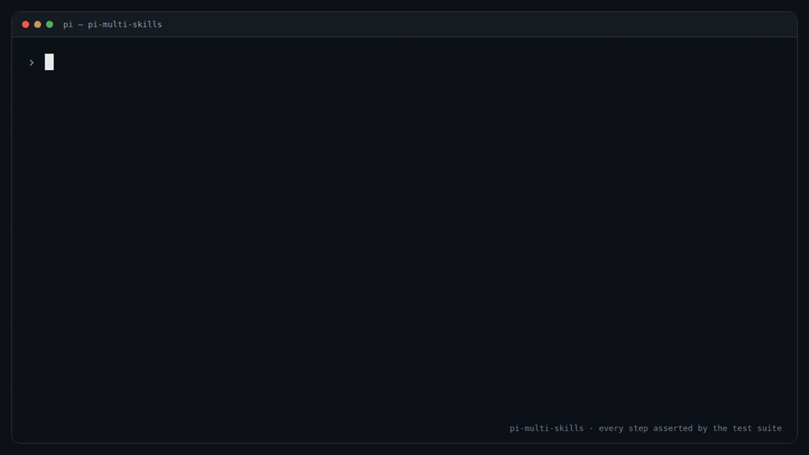

pi-multi-skills
Chain several /skill: invocations in one pi message:
/skill:a x /skill:b y.
pi expands exactly one skill per message and swallows the rest as argument text. This
package runs an input handler first and rewrites the message into one skill
block per named skill, each followed by the argument text that skill owns.

Assets this site serves
The README's images and the package's gallery previews (pi.image,
pi.video) resolve to /images/… here:
cover.png,
message flow,
autocomplete,
architecture,
the handler's paths. Each has a dark render
one filename away (.dark.svg).